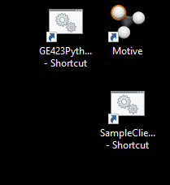

![Pinout card of the OpenMV Cam (by Ibrahim Abdelkader and Kwabena W. Agyeman, https://openmv.io): a
photo of the red camera board with its lens, with the two pin headers labelled. Left header, top to bottom: P0
(PB15, SPI 2 MOSI, UART 1 RX), P1 (PB14, SPI 2 MISO, UART 1 TX), P2 (PB13, SPI 2 SCLK, CAN2 TX),
P3 (PB12, SPI 2 SS, CAN2 RX), P4 (PB10, UART 3 TX, I2C 2 SCL), P5 (PB11, UART 3 RX, I2C 2 SDA), P6
(PA5, ADC, DAC), and the 3.3V rail (250 mA supply max). Right header, top to bottom: Reset (connect to
GND to reset), BOOT 0 (connect to 3.3V for DFU mode), Frame Sync, P9 (PD14, Servo 3, TIM4 CH3), P8
(PD13, Servo 2, TIM4 CH2, I2C4 SDA), P7 (PD12, Servo 1, TIM4 CH1, I2C4 SCL), VIN (3.6V to 5V), and the
GND rail. Notes on the card: LED1 red, LED2 green, LED3 blue, LED4 IR; all pins are 5V tolerant with a 3.3V
output (P6 is not 5V tolerant in ADC or DAC mode) and can sink or source up to 25 mA, up to 120 mA in
total; maximum current used is under 150 mA without and under 250 mA with a micro SD card.](Labs/Figures/Lab7/openmv_cam_pinout.png)
SE 423 Mechatronics
Laboratory Assignment #7
Robot Vision
Two Week Lab
TA Check-Offs in this document: 8 (marked “TA Check-Off” in the text and listed at the end)
Import Note when Connecting OpenMV camera to Lab PC or your Laptop: Make sure there is no battery in the robot car when you have the robot’s OpenMV camera connected to something else than the on board Raspberry Pi 4. Also have your TA show you the best way to plug and unplug the OpenMV camera from the Raspberry Pi 4. A Dangling USB cable’s ground can short to the Robot’s power.
Also do not update the firmware of the OpenMV camera unless your instructor tells you it is OK.
For this lab we are going to start with a starter project called “FinalProjectwithCANAprilStarter”. Ask your instructor if there are any repository updates. If there are use Git document section “Course File Updates” to merge the updates. Import the FinalProjectwithCANAprilStarter project into your CCS workspace. Use the hammer icon to make sure you can build this project. Also you will probably want to switch the build to “Flash” so that your program is ready to run when you reset the Red Board.
Let’s take a look at this code created with the FinalProjectwithCANAprilStarter. You will find, that for the most part it includes all the code you have developed in the previous labs. I moved much of the code into a library file in order to reduce the amount of code in the main C file. Open SE423Lib.h and SE423Lib.c to find all the functions you had created in previous labs.
Also notice there are some new source files MatrixMath.c (Matrix functions for the Kalman filter) OptiTrack.c (Motion tracking system support functions) and user_xy.c (Control code to command the robot to X,Y positions.)
Finally take a look at the main C-file. Note, this code implements the Kalman filter to merge the OptiTrack (Motion Capture system) data with the Dead Reckoned ROBOTps position.
Find in main() the while(1) loop and notice how this code uses the pushbuttons to allow you to print more messages to the text LCD screen. When we run the code below, make sure to push the four buttons to see the different messages printed.
The flow of the code is the same as Lab 6:
When priority permits, SWI1_HighestPriority is called. Inside SWI1 will be where you develop most of you F28379D code for Lab 7 and the Final Project. Taking a look:
Now you are ready to flash your F28379D board with the code and see how the robot is controlled with this starter code.
Before you can run this code your instructor needs to show you how to setup and start the motion tracking system called
the OptiTrack system. Steps below are to remind you:
Log into the Motion Tracking PC with username “dan5” and password “f33dback5”.

Run the Application “Motive”. Icon in top right corner of left monitor.
Once OptiTrack is running, you can try out this code.
Study the code a bit more to see how this X, Y control code is working. Find the robotdest array in your code. Look in main() for the values its elements are initialized to. The function xy_control() returns 1 (or true) whenever the robot has reached within 0.5 feet of the desired X, Y point.
Look at the call to xy_control() in SWI1_HighestPriority() and figure out and Explain to your Instructor how the code moves from one point to another point listed in the robotdest array.
NUMWAYPOINTS is currently defined as 8. Change it to 10 and add two more way points (X, Y points) in the path for the robot to traverse. Feel free to add the points anywhere in the array.
Demo this working to your Instructor.
In this exercise, we’ll get started working with the OpenMV Cam. The OpenMV project began in 2013, when Ibrahim Abdelkader took it upon himself to build a small, affordable, expandable machine vision module. Unlike the microcontrollers we’re used to working with in SE423, the OpenMV uses MicroPython, a lightweight version of Python 3 that includes a small subset of the Python standard library and is optimized to run on microcontrollers. In addition to the standard MicroPython libraries, the OpenMV camera includes extensive machine vision and image processing libraries. To easily interface with the device, debug code, and capture snapshots to find color thresholds, the OpenMV team created an IDE. The IDE is available at OpenMV’s downloads page:
Specs (If you’re curious): The OpenMV H7 Plus camera features a STM32H743VI ARM Cortex M7 processor running at 480 MHz. It incorporates 1MB static RAM and 2MB of flash storage. Its MT9M114 image sensor can record up to 640x480 8-bit images at 40fps, and 320x240 (or lower) images at 80fps. The standard lens 2.1mm, but can be replaced with specialized lenses thanks to an M12 lens mount. Other features of the board include a 12-bit ADC and DAC, 3 I/O pins for servo control, and interrupts and PWM on the board’s 10 I/O pins.
First, fire up the IDE on the workstation computers or your laptop. It is ideal if each team has at least one laptop with the IDE installed so that you can work with the camera while it’s on the robot on the floor. You will need to capture images of golf balls on the ground to program the color thresholds, and this process is easier if you can directly connect the camera to your laptop.
When you first open the IDE, you may receive pop up windows asking to update software. On the lab PCs do not perform the updates. On your laptop you can perform the updates. Also when you connect the camera to the IDE in steps below it will ask you to update the firmware of the camera. Unless your instructor asks you too, do not update the OpenMV’s firmware. Thanks.
When you first open the IDE, you’ll see the following window:
The “helloworld.py” script is automatically opened in the editor. Basic file commands such as copy and paste are in the leftmost panel. The “Connect” and “Start” buttons are on the bottom left, as is the “Serial Terminal” button. You’ll need to press this to open the serial terminal and view the output of “print()” statements in your code. The frame buffer preview panel is in the top right corner. When code is running on the OpenMV camera, the image currently stored in the module’s frame buffer is displayed here. Beneath the frame buffer preview panel is the “Histogram” panel. You can use the dropdown to view the histograms in different color spaces. The IDE also includes some useful information beneath the “Histogram” panel. When a camera is connected, it will display information about the camera, the camera’s COM port, the drive that exposes the camera’s flash memory or SD card, and the camera’s frame rate.
With the robot powered off and its battery removed, remove the USB cable connecting the camera to the Raspberry Pi from the camera and connect the camera to the Desktop PC or your laptop. You can use the USB cable that we use to connect to the JTAG for the RedBoard. When the camera boots up, it will appear as a USB storage device on the computer. You can use the file explorer to move programs and assets to the camera as well as interact with image saved to the camera’s SD card.
Press the connect button in the bottom left of the window (or press Cntrl+E). The “Start” button will turn green, indicating that you can now run the program in the code editor. Also notice that the information in the bottom right of the IDE window is updated. Note the COM port and drive location.
Now, press the “Start” button (Cntrl+R). The “helloworld.py” example runs a while loop that captures an image on each iteration using the sensor.snapshot() method. This command stores an image in the frame buffer, which you should see in the frame buffer preview window.
The frame resolution and pixel format are set using the sensor.set_framesize() and sensor.set_pixformat() methods. Many more camera settings can be adjusted in the sensor library. See the docs here:
Now, we’re going to capture a test image that we’ll use to set the color threshold values. With no battery in your robot, place the robot on the floor with a few orange and purple golf balls in the camera’s field of view and connect the camera to the OpenMV IDE. Make sure two colored golf balls are close to the camera and two are farther away. For color tracking OpenMV examples recommend that “auto gain” and “auto white balance” be disabled. So you need to add code to the Hello World program. But be sure to change the name of the helloworld program because the OpenMV IDE seems to rewrite the default helloworld_1.py file over the top of one that you have saved. The best place to save your OpenMV files is in your “workspace\OpenMV” folder. The code you need to add after the sensor.set_framesize command is:
# must be turned off for color tracking sensor.set_auto_gain(False,gain_db=11.4801) sensor.set_auto_whitebal(False) # must be turned off for color tracking
You can play with the gain_db value if you want but 11.4801 seems to work pretty well. Run this code and you will notice that the picture is a bit darker than before these lines were added. Also notice that if you right click on the displayed picture you can save the picture to a file. This will be useful in the future when you want to take a number of pictures of how the camera views colors in different locations of the robot’s work area.
Before we go to the next step of finding a good LAB threshold value for these two golf ball colors it is nice to first find an approximate LAB range for each color. To find a LAB starting range, while OpenMV is displaying your image with the golf balls present on the floor, with your mouse click and drag a small box that just includes pixels with the color you want a LAB threshold range. Once you do this the histogram displayed on the right is just displaying the LAB range of the pixels inside that box. Look at the Min and Max values of the histogram and that will tell you a starting range for your LAB threshold. Do this for both colors and write down this initial LAB threshold before going on to the next paragraph.
To find a more precise threshold range for both of your colors there is a threshold editor tool that you can use. First make sure the “Zoom” button under the image is not clicked and have your code running viewing the golf balls. In the IDE, navigate to ToolsMachine VisionThreshold Editor and a dialog will pop up giving you a selection of either the Frame Buffer or an Image File. Select Frame Buffer and the current image will be brought into the Threshold Editor tool. But note you could have opened an image file you saved which may be useful in the future. This will open a window containing your source image on the left and a binary image on the right. In the binary image, white pixels are in the threshold and black pixels are not in the threshold. That is, you want your golf ball of interest to be white and everything else to be black. Use the min/max sliders for the L, A, and B channels to adjust the threshold. Recall from lecture that the “L” channel is lightness, the “A” channel ranges from green to magenta, and the “B” channel ranges from blue to yellow. Ask your instructor for some tips on finding the correct LAB ranges. When you are satisfied with the threshold, copy or write down the threshold values towards the bottom of the window. We will use these values in the blob search code so the camera knows which colors to look for. Do this for both color golf balls.
Next, we’ll create a crude blob search program that scans through each pixel in the image and recolors all pixels, within the threshold, to black. It also calculates the centroid of the detected pixels and draws crosshairs at that location.
First step is to copy the OpenMV starter files to your workspace folder. In File Explorer, find your repo’s folder and explore into “OpenMV”. Copy the three .py files and then explore to your “workspace\OpenMV” folder and paste the files there. In “workspace\OpenMV” is where I recommend you save all your OpenMV files. This way when you add your CCS projects to Github by running “git add workspace” you will also be adding your OpenMV files.
For this exercise you will load from “workspace\OpenMV” the file ManualBlob_STARTER.py. In lines 7-14, assign your threshold values to the L, A, and B min and max values. Recall that the order of the six threshold values is: (L_min, L_max, A_min, A_max, B_min, B_max). Scroll down to the main loop at line 30 and notice the same sensor.snapshot() method used to store an image in the frame buffer. This method returns an “image” object that we can use to interact with the image. Next, you will need to create “worker variables” that you will use to calculate the centroid of all pixels within the threshold. Review your notes from lecture on what worker variables are needed.
Next in the code is the two nested for loops that iterate over the columns in the outer loop and rows in the inner loop. Within these loops, the image.get_pixel() method is used to get the RBG value of the pixel at column=i, row=j. Next, the rgb_to_lab() method is used to convert the RBG values to LAB values. In line 49, we check to see if the pixel falls within the threshold. If the pixel does fall inside the threshold, you will need to add this pixel to the sum of pixels already found within in the threshold. Your worker variables will be used to keep track of these pixels. Note: one of your worker variables will need to be called “pixel_cnt”.
After the for loops, use your worker variables to calculate the centroid of the image. X_cent = ? and Y_cent = ?
Once you’ve made the required changes, connect to the camera and run the program. You should see an image in the frame buffer preview along with the centroid and frames per second printed to the serial terminal. Verify that the correct pixels were detected, that is, the region of interest is black, and notice the white crosshairs in the center of the detected region. Also notice that this program runs very slowly. Looping over an image like this is very inefficient, especially when implemented in a relatively slow language like Python. In the next exercise, we’ll see how OpenMV’s built-in blob search algorithm can get the job done much faster. One quick additional exercise: instead of painting the pixels within the threshold black, paint these pixels green instead.
For this exercise you will use/open another python (.py) file you already copied to your “workspace\OpenMV” folder, MultiBlobtwoColorwithLCDQQVGA_firmware4_5_9.py. This script uses the image.find_blobs method to find the three largest blobs that fall within two color thresholds. In addition to highlighting the blobs and drawing crosshairs at the centroids, it sends the areas and centroids over UART to the RedBoard. For now, we can ignore the communication protocol while we modify our vision algorithm. First, enter both of your color thresholds values into the “threshold1” and “threshold2” variables. Connect the camera again and run the script. You should see a rectangle drawn around the desired object with a cross hair in the center. Notice how much more quickly the built-in blob search algorithm performs and notice the frames per second (fps) printed to the terminal. We have a few additional knobs here to adjust the blob search algorithm. The “pixels_threshold” and “area_threshold” arguments of the ”find_blobs” method set a minimum allowable area for the number of pixels in the blob and the area of the blob, respectively. If the algorithm doesn’t find the object, try reducing these threshold values until it reliably finds the object. If the algorithm picks up extraneous blobs smaller than the desired object, try increasing the values. If none of these methods work, you may need to go back and verify your threshold values. Play with these two thresholds so you see how they work.
Demonstrate this code working to your TA.
In the previous exercises you used the OpenMV’s IDE to debug and download micro-Python programs to the OpenMV board. We will again use this IDE to modify starter code to search for both orange and light purple golf balls. After we have our OpenMV code ready to run continuously, the below steps will explain how to save the Python code on the OpenMV’s SD card so that when it is either powered on or reset, with a press of the reset button, it will be the default code running.
Now let’s move to code on the F28379D board. The starter code is all set to read the centroid data sent from the OpenMV camera to the F28379D’s UART_SCIA. All you need to do is flash this starter code to the F28379D. Also your TA will show you how to plug the OpenMV camera’s USB port into one of the Raspberry PI’s USB ports. With the code flashed to the F28379D, place the robot on the floor in the course and press the reset button of the F28379D along with the reset button of the OpenMV. Once running put some golf balls in the camera’s view and you can see the “Max Blob Area, Max Blob Column Centroid, Max Blob Row Centriod” printed to the text LCD screen if you press button 1. The top line is the orange color and the second line is purple. Move the robot around a bit and notice the values changing on the text LCD. Put three purple and three orange balls in front of the robot and now press button 2. Notice the second largest blob coordinates are printed to the text LCD. Finally if you press button 3 the third largest blob coordinates are printed to the text LCD.
Show this working to your instructor.
Now that you have areas and centroids printing to the text LCD (when you press the correct button), collect some data to find an equation that relates row centroid to the distance the golf ball is away from the robot. One very important assumption you will be making here is that the golf ball is always on the floor. Also since the camera has a fish eye lens, you will make sure the ball is in the center columns of the camera image. Ask your instructor for a yard stick and use it to measure the distance the center of the robot is away from the golf ball. Take measurements every 0.5 feet, starting at 1 foot, up to 4.5 feet away from the center of the robot. Record the distance from the robot and the row centroid at that distance. Then when you have the data recorded, use curve fitting in Matlab to find a good equation that calculates the distance in feet from the robot to the ball given the ball’s row centroid. This will not be a linear equation. Calculate this equation in your SWI1 function when a new centroid is found and every 100ms print the distance the ball is away from the robot to the text LCD screen.
Demonstrate this working to your instructor.
For this exercise you will start to implement RobotState 20 (Follow/Pickup Orange Golf ball) and RobotState 30 (Follow/Pickup Purple Golf ball). Looking at SWI1’s code you will notice there is an empty RobotState 20 case statement. You will be adding a case 30 later. For now let’s just focus on following the largest orange blob the OpenMV finds. For this reason at the line before the statement “switch (RobotState) {“, add “RobotState = 20”. This will make the state machine code always run state 20. Inside state 20 keep the code pretty simple for now. The goal is to follow the orange golf ball so it always stays in the center of the camera’s view. Because we are interested in the center of the camera’s view left to right, the following code will use the column centroid. Also since the goal is to keep the blob in the center columns of the camera’s view, it is nice to change the centroid so that zero is in the center of the view. So create a global float variable colcentroid and since our camera image has 160 columns set it to colcentroid = MaxColThreshold1 - 80; colcentroid will now be a value between -80 and 80. Additionally inside case 20 implement the following code listed as Pseudocode:
If MaxColThreshold1 == 0 || MaxAreaThreshold1 < 3 Vref = 0 Turn = 0 Else Vref = 0.75 Turn = kpvision * (0 - colcentroid) // start kpvision out as 0.05 and kpvision could need to be // negative.
Run this code on the floor pushing an orange golf ball around making the robot follow. Tune your kpvision value to make the robot flow nicely.
With the robot being able to follow orange, modify RobotState 1 and RobotState 20 to do the following:
Show this working to your instructor
Create a case 30, 32, 34, 36 that performs all the same steps as 20, 22, 24,26 but for purple and in case 1 switch to case 30 if the largest ball found was a purple golf ball. You will also have to change your case 1 switch to case 20 to check both orange and purple to see which is the largest if both are seen.
Show this working to your instructor.
Show your TA the final F28379D program and LABVIEW program commanding the robot to go to the different x, y points and then if a golf ball is seen go towards the golf ball until it disappears. Stall for two seconds once it disappears and then return to commanding the robot to x, y points.
Tick each box once your TA or instructor has checked you off.
Make sure that you comment you code and put your initials in your Gradescope submission! See https://marius-juston.github.io/SE-423---Class-Material/Homeworks/commenting_code_example.pdf for how we expect the code to be commented like!
![The OpenMV IDE window with helloworld_1.py open, with six parts labelled. “Code Editor”: the large dark
panel on the left showing the Python script. “Frame Buffer Preview”: the panel in the top right corner, currently
showing “No Image”. “Histogram”: the panel below the frame buffer preview, with three empty histograms
(RGB Color Space) and their Mean, Median, Mode, StDev, Min, Max, LQ and UQ values. “Connect Button”
and “Start Button”: the two icons at the bottom of the left toolbar, marked with red boxes; the connect button
(a plug) is above the start button (a play arrow). “Serial Terminal”: the tab at the bottom left of the window,
next to “Search Results”, marked with a red box.](Labs/Figures/Lab7/openmv_ide_window_labeled.png)